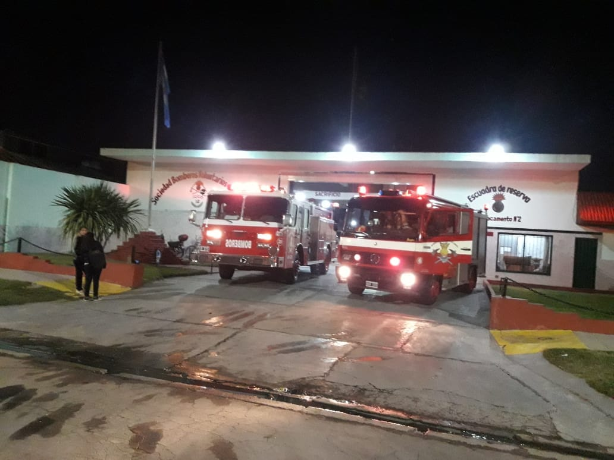

Cuartel Central
Ubicado sobre la Av. Presidente Raúl Alfonsin 1039, el cuartel central de Bomberos Voluntarios de Lanus presta servicio desde el 20 de septiembre de 1913. A cargo del jefe de cuerpo Ruben Vairetta, mas de 50 bomberos brindan ayuda a la comunidad.

Destacamento 1
Unicado sobre la calle Matanza 2757, el destacamento 1 "Villa mauricio" presta servicio desde el 17 de septiembre de 1961. A cargo se encuentra el Of. Mora, mas de 40 bomberos brindan ayuda a la comunidad.

Destacamento 2
Unicado sobre la calle Nueras 4355, el destacamento 1 "Villa mauricio" presta servicio desde el 17 de septiembre de 1961. A cargo se encuentra el Of. Diegues, mas de 40 bomberos brindan ayuda a la comunidad.
